Zotero介绍
官方网站：Zotero | Your personal research assistant
Zotero是一个免费软件，可以帮助你进行文献的收集、整理、注释和引用。
Zotero具有较高的自由度，有许多插件可供选择。
下载与安装
本体
可在Zotero官网下载安装包
运行安装包，选择安装位置即可
浏览器插件-Zotero Connector
Zotero Connector可以从网页中抓取文献和元数据，将其保存到本地。只有Zotero运行时Zotero Connector才能使用。
Zotero Connector支持Edge、Chrome、火狐、Safari浏览器
Edge、Chrome插件可在对应浏览器的插件引用市场获取
火狐、Safari的插件安装方法可参考下载页面
插件
打开【Zotero】
点击【工具】—【插件】
将需要安装的插件【拖动】至该页面
安装完毕后重启【Zotero】
推荐插件
ZotFile：自动修改附件名、添加附件
茉莉花：抓取中文网站元数据
配置
在线同步
打开【Zotero】—【编辑】—【首选项】—【同步】
在【数据同步】栏创建并登录Zotero账号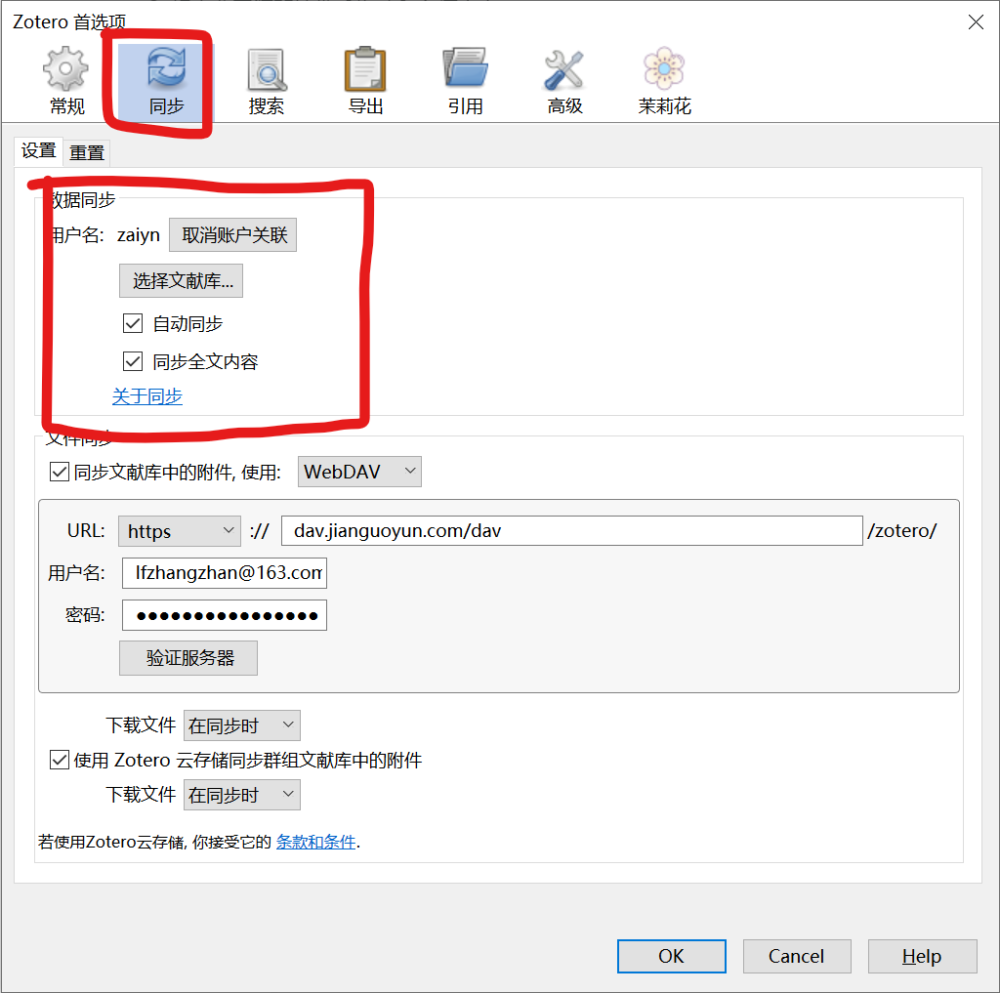
在【文件同步】栏，可以使用Zotero文件同步服务的300MB免费空间，也可以使用支持WebDAV的云盘，这里使用坚果云为例，坚果云免费账号每月提供1GB上传流量和3GB下载流量，足够用于文献同步
进入坚果云官网，创建并登陆账号，进入【账户信息】—【安全选项】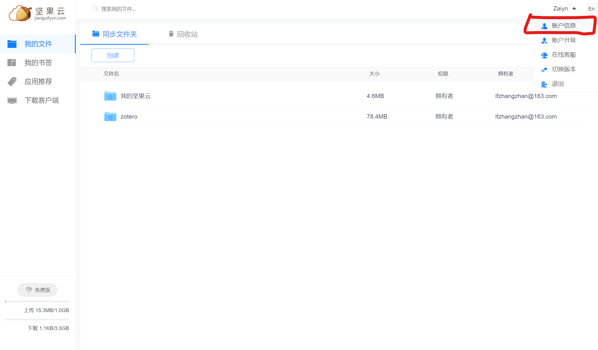
点击添加应用，输入名称（如Zotero），点击生成密码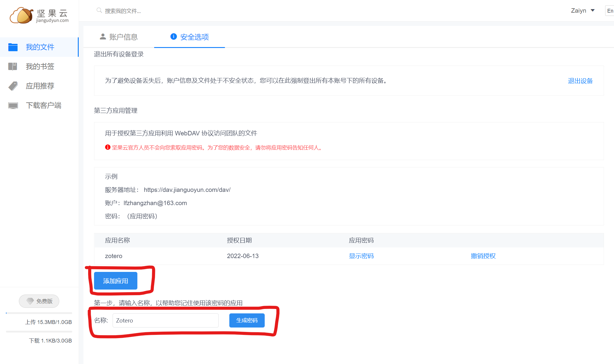
将服务器地址、账户、密码复制入【Zotero】设置界面的【文件同步】栏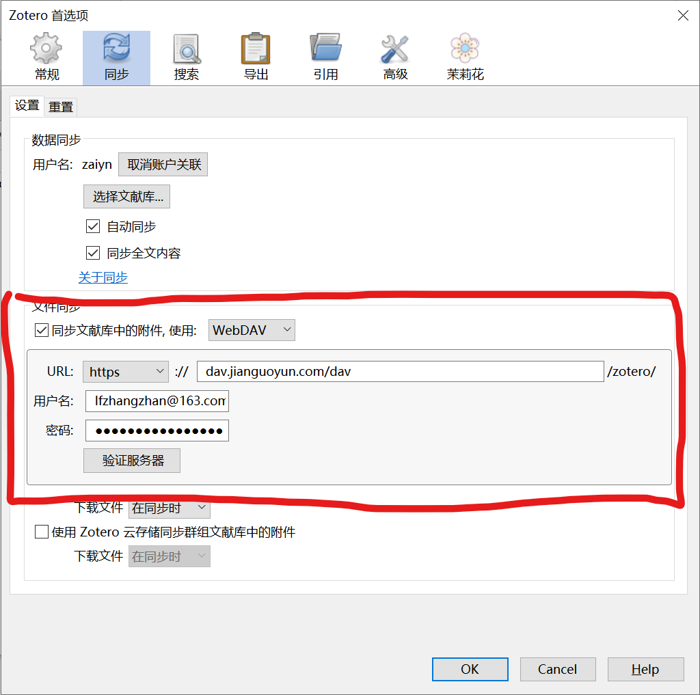
PDF下载-sci-hub
打开【Zotero】—【编辑】—【首选项】—【高级】—【常规】—【设置编辑器】
接受风险，搜索找到【extensions.zotero.findPDFs.resolvers】
双击编辑，将默认的
[]替换为1
2
3
4
5
6
7
8
9{
"name":"Sci-Hub",
"method":"GET",
"url":"https://sci-hub.hkvisa.net/{doi}",
"mode":"html",
"selector":"#pdf",
"attribute":"src",
"automatic":true
}其中【https://sci-hub.hkvisa.net】为可用的sci-hub链接
设置完成后可通过ISBN、DOI等下载PDF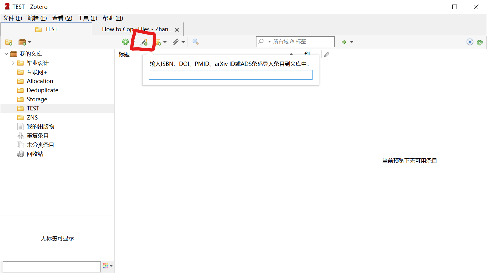
也可以在Zotero Connector无法抓取PDF时，右键点击条目手动下载PDF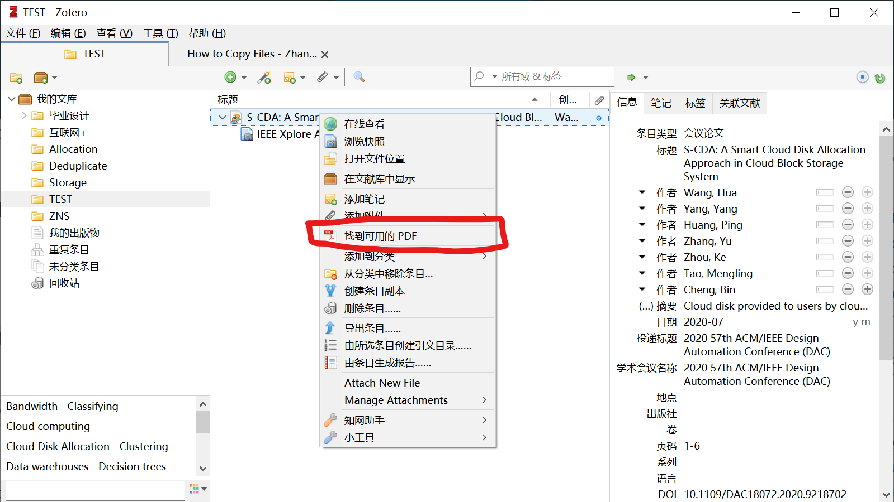
ZotFile
进入【Zotero】—【工具】—【ZotFile Preferences…】
【General Settings】设置更加方便的向条目中添加附件，但个人感觉实用性不强，设置可参考文末的参考链接Zotero：科研小白的第一款文献管理软件 - 知乎 (zhihu.com)
【Tablet Settings】设置与云盘的同步，并实现跨平台同步，设置方法同样参考文末链接Zotero：科研小白的第一款文献管理软件 - 知乎 (zhihu.com)
【Renaming Rules】设置通过规则语句对PDF、DOC等文件进行重命名，规则语句的编写格式参考ZotFile的说明
【Advanced Settings】对重命名进行进阶设置，可以不动
茉莉花
- 还没用过，待补充
使用实例
在网页中找到需要的文献，点击【Zotero Connector】，可在弹出的页面将本文献的条目归档至某文件夹，并添加tag。这里将文献归档至【TEST】文件夹并添加tag【00】代表未读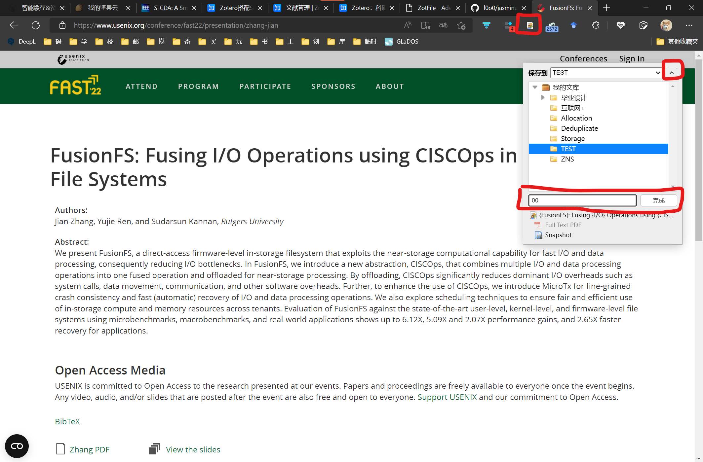
可以看到我们刚刚添加的文献，两个文件分别是文献的PDF和网页快照，双击即可打开，此外可在右侧设置文献条目的信息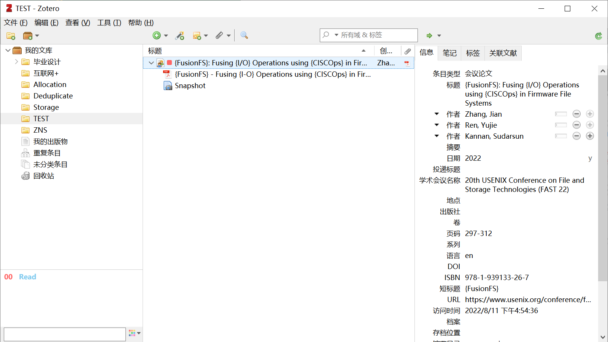
在阅读文献的过程中做的笔记以及其他相关资料，可以以【附件】的形式添加到文献条目中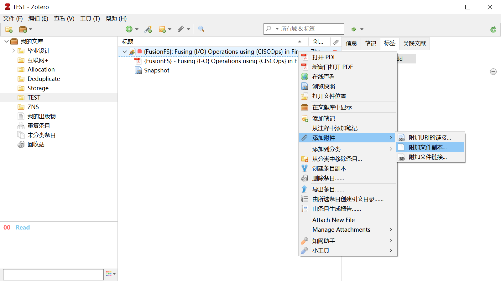
左下角的展示的是文献的tag，可以通过指派颜色管理常用的tag，如已读、未读等，右键点击代表已读的tag【Read】，选择指派颜色，即可将其设置为蓝色，快捷键设为【2】，之后就可以通过键盘【2】快速更改条目的阅读状态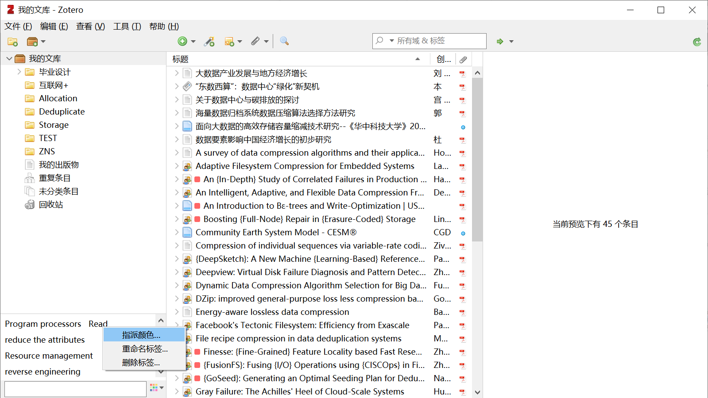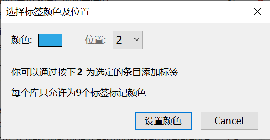